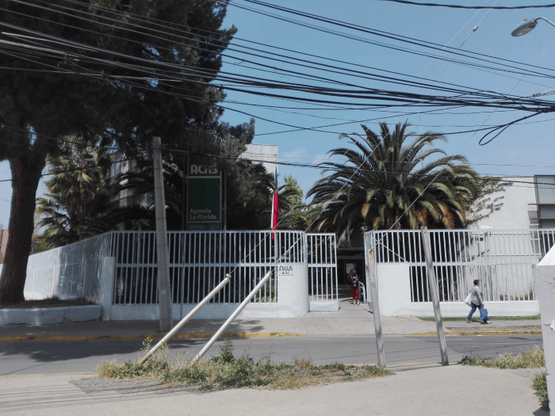

Constructora Santa Patricia SPA
Especialistas en retiro de asbesto desde 2014, creando soluciones innovadoras y sostenibles para proteger la salud y el medio ambiente.
¿Quiénes Somos?
En Constructora Santa Patricia SPA, nos hemos consolidado como líderes en la industria de la construcción sostenible y la gestión ambiental. Desde nuestros inicios en 2014, hemos trabajado con compromiso y excelencia en cada proyecto, ayudando a transformar espacios con soluciones eficientes y responsables.
Con un equipo altamente capacitado y tecnología de última generación, ofrecemos servicios especializados en el retiro de asbesto, construcción sostenible y consultoría ambiental, adaptándonos a las necesidades de cada cliente.
Servicios Especializados

Retiro de Asbesto
Especialistas certificados para la eliminación segura y eficiente del asbesto en proyectos residenciales e industriales.

Cubiertas
Diseñamos y construimos espacios utilizando materiales ecológicos y técnicas de bajo impacto ambiental.

Mejoramiento de estructuras
Brindamos asesoramiento especializado en gestión de residuos y cumplimiento de normativas medioambientales.
Arriendo Zona Movil de Descontaminacion
Brindamos asesoramiento especializado en gestión de residuos y cumplimiento de normativas medioambientales.
Proyectos Destacados
Etapa 0 ACHS La Florida
Implementación de técnicas innovadoras para la creación de hogares en zonas rurales y urbanas.

Retiro de Cubierta Asbesto
Un proyecto integral para renovar espacios residenciales con materiales sostenibles y diseños modernos.
Reposicion cubierta ZINK
Soluciones eficientes para el manejo de desechos en obras de construcción, garantizando un impacto ambiental mínimo.